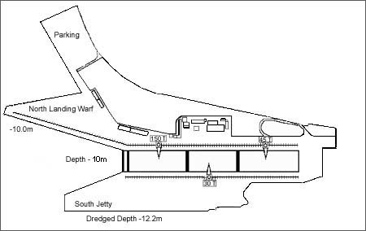
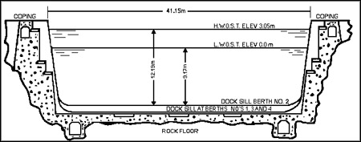

About the DockThe Esquimalt Graving Dock's dimensions measure 357.5 metres by 38.4 metres - or about 1,200 feet long by 135 feet wide. The north landing jetty is 305 metres long (1000 feet) and contains 10 metres of water (30 feet) at low tide. There is another 305 metres (1000 feet) of berth frontage at the south landing wharf. The Dock can be divided in two with a caisson and closed by floating caissons ballasted with concrete and sea water. A tunnel on the north side is used to fill and empty the Dock and this tunnel connects to separate tunnels enabling each section of the dryock to fill independently through culverts in the floor. The property perimeter is fenced and there are reinforced concrete retaining walls bordering the east end. The Dock is lit by eight high-mast towers with high pressure sodium lighting fixtures plus standard mercury vapour lighting. Dock DimensionsAerial View of the Dock Cross Section of the Dock Technical Information
Source: Harbour & Shipping Journal, July 2002, Volume 85, No. 7 |
||||||||||||||||||||||||||||||||
{kind=link}